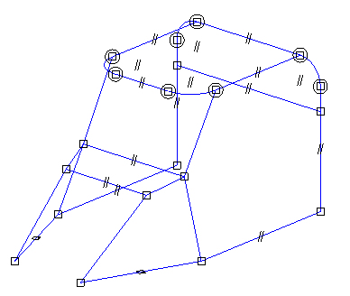
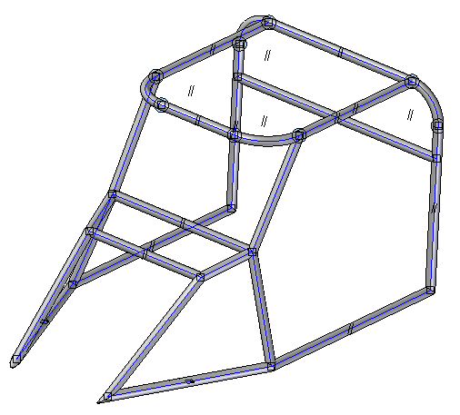
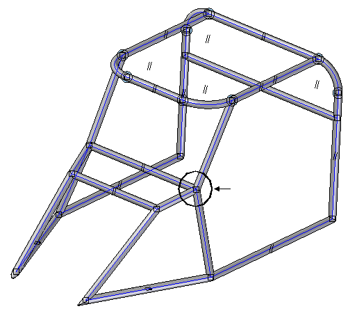
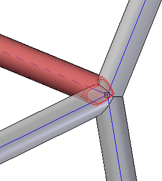

Activity: Dune buggy frame
Overview
In this activity, create a dune buggy frame. The paths are defined. All of the paths are 3D lines and arcs. Use a round tubing component. The handle point for the round component cross section is the center point. Round cross sections usually produce the desired results at initial placement. No frame repositioning is needed.
Open dune_buggy.asm.

Choose the Frame command .
Click OK in the Frame Options dialog. Use the default miter corner treatment.
On the command bar, click the Select Cross Section Component button .
In the Frame dialog box, select the DIN folder.
Select the Round Tubing folder.
Select the RoundTubing 25x2.par component and then click Open.
Ensure the Select field is set to Single and drag a select fence around all paths and then click the Accept button.

Click Finish.
On the Frames Option dialog box, click Cancel.
Zoom in to the area shown.

Observe the trimming results. Four frames meet at a single point and all trim as expected.

Close dune_buggy.asm.
Click the Close button in the upper - right corner of the activity window.